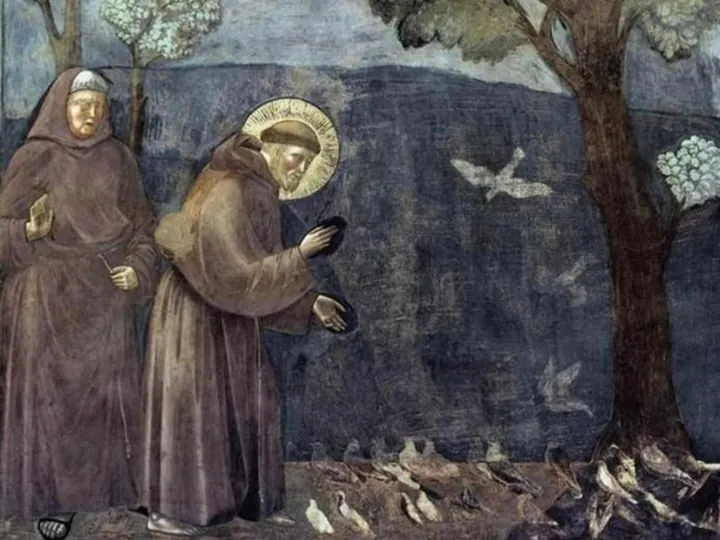

da sab 26 set a sab 7 nov
San Francesco e i francescani in San Fermo Maggiore: visite guidate tematiche
Nel contesto dell'anno francescano 2026, con l' ottavo centenario della morte di San Francesco d'Assisi (3 ottobre 1226), e dopo il sold out primaverile, l'Associazione Chiese Vive propone un ciclo di visite guidate tematiche della Chiesa di San Fermo Maggiore , la chiesa più…
 Indicazioni
Indicazioni
- Costi e prenotazioni
- Costo non indicato · Prenotazione non indicata
- Programma
- Programma da verificare. Apri la fonte ufficiale per orari e possibili aggiornamenti.
- In caso di maltempo
- Nessuna indicazione specifica pubblicata.
- Note
- Acquisito automaticamente dalla fonte.
L’EVENTO
Descrizione completa
Nel contesto dell'anno francescano 2026, con l' ottavo centenario della morte di San Francesco d'Assisi (3 ottobre 1226), e dopo il sold out primaverile, l'Associazione Chiese Vive propone un ciclo di visite guidate tematiche della Chiesa di San Fermo Maggiore , la chiesa più ricca, a Verona, di opere d'arte a tema francescano.
Sei date, da settembre a novembre, per scoprire le bellezze di una delle chiese storiche di Verona che ospita al suo interno numerose opere a tema francescano, tra cui uno dei più antichi affreschi del santo (circa 1280) nella chiesa inferiore, affreschi trecenteschi nella parte gotica, il mausoleo Brenzoni e cicli pittorici francescani, rendendola quindi dal punto di vista artistico la più ricca in città.
La storia di San Fermo è una straordinaria testimonianza , nei secoli, della devozione ai Santi martiri Fermo e Rustico, uccisi nel 304 d.C lungo le rive del fiume Adige. La loro storia è ben narrata nei bassorilievi bronzei che decorano il portale, opera del 1997 del maestro Luciano Minguzzi. La chiesa costituisce un raffinato esempio dello stile gotico diffuso in Italia dall’Ordine dei Frati Minori, e rappresenza un singolare caso per i rimandi all’architettura francese, soprattutto nella parte alta dell'edificio, con guglie e pinnacoli insoliti nello scenario cittadino.
Prenotazione obbligatoria.
IL PROGRAMMA
Programma e orari
Appuntamenti raccolti dalle fonti elencate. Dove manca un orario, non è ancora disponibile in questa scheda.
Programma pubblicato
- 2026-09-26 — 2026-09-26 · 16:00:00
- 2026-10-03 — 2026-10-04 · 16:00:00
- 2026-10-18 — 2026-10-18 · 15:00:00
- 2026-11-07 — 2026-11-07 · 15:30:00
INFORMAZIONI UTILI
Prima di partire
- Controllare la fonte prima di partire.
ORGANIZZAZIONE